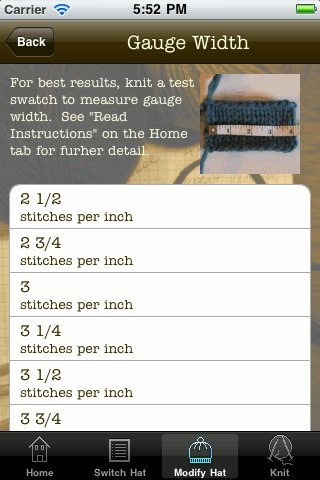

Additional Features
- Keep more than one project on the go at a time.
- Email your customized hat patterns to yourself or to friends.
- 99 possible hat designs
- Built-in yardage calculator tells you exactly how much yarn you need.
- Detailed instructions, notes, and material lists
- Easy to navigate menus
- Screen stays lit while you're knitting
- Add personal notes to each pattern
- Adjust font size when viewing patterns
- Track your progress at each step
- Progress indicator shows how much you've knit
Links

Who's using our app?
Knit Hat Designer is a hat pattern design application for all knitters with a basic skill level. Our app was built with the creative knitter in mind. Why continue to buy single use patterns that are designed for a single gauge of yarn? We think that, with a little help from a computer, normal people should be able to design simple hat patterns by themselves. Knit Hat Designer helps you to do exactly that!
How does it work? Knit Hat Designer has simplified the creative process by breaking down a hat pattern into six key traits: Style (the crown or top part of your hat), Ribbing (the finish, or bottom part of the hat), Gauge Height and Width, and Head Height and Circumference. You design your hat by telling Knit Hat Designer what to use for each trait. When you press "Knit", Knit Hat Designer will do a little bit of thinking, and then -- voila! -- it will provide you with a pattern that's ready to knit from!